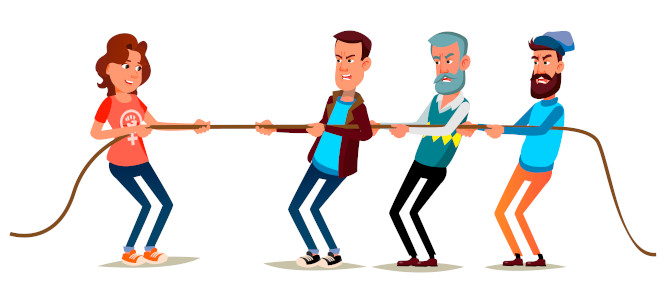

De acordo com outra citação da mesma autora citada antes: “O homem é definido como ser humano e a mulher é definida como fêmea. Quando ela comporta-se como um ser humano ela é acusada de imitar o macho. ”, podemos relacionar com o pensamento em que o papel da mulher não é valorizado como deveria ser. Contudo, percebe-se que a mulher vem conquistando uma maior representatividade e espaço no mercado de trabalho, um exemplo é dentro da indústria cinematográfica, onde podemos citar o filme “Mulher-Maravilha”, que foi a primeira obra em que temos como personagem protagonista e absoluta uma mulher.
Em suma, acredita-se que o pensamento machista ainda é muito presente nos dias atuais, e sua desconstrução é necessária pois o número de mulheres que sofrem com esse preconceito é muito alto e assustador. Destarte, é necessário que desde o começo da escolarização os jovens aprendam a respeitar a todos igualmente independente do seu gênero, e ao se realizar esses passos, estaremos mais próximos de alcançar a plenitude no que tange à qualidade de vida no mundo.
